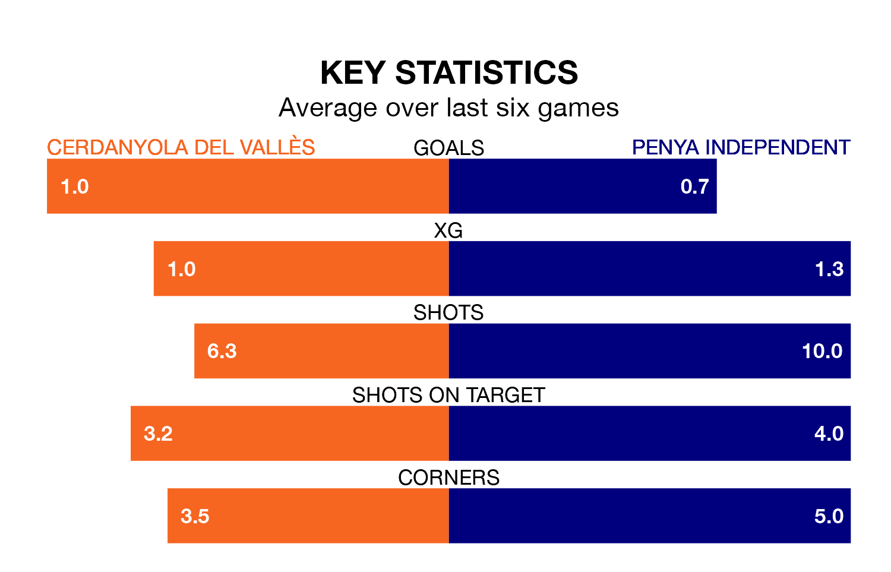

Sunday's early match at Estadi Municipal La Bòbila-Pinetons sees two relegation candidates play each other, as 16th-ranked Cerdanyola del Vallès host 17th-placed Penya Independent.
Cerdanyola del Vallès have picked up 21 points from their first 21 Segunda División RFEF Group 3 games, with five wins and six draws.
That is seven points more than Penya Independent have collected, having won three and drawn five.
Cerdanyola del Vallès are in bad form in Segunda División RFEF Group 3, with one win and five losses from their last six games.
And also with a win and five losses over that period, Penya Independent's form is identical – they have both taken three points from 18.
With 15 goals in 20 games so far this season, the visitors are the league's second-lowest scorers with 0.8 goals per game. And they are conceding more than average, letting in 32 goals at a rate of 1.6 per game.
The home team, meanwhile, are average scorers, with 1.2 goals per game. They have conceded 1.6 goals per game.
Cerdanyola del Vallès's last match was on January 28, a 3-2 loss against Andratx.
Penya Independent lost 3-0 against Valencia B last time out, also on January 28.
Updated: 10:03 (UTC), 30/01/24